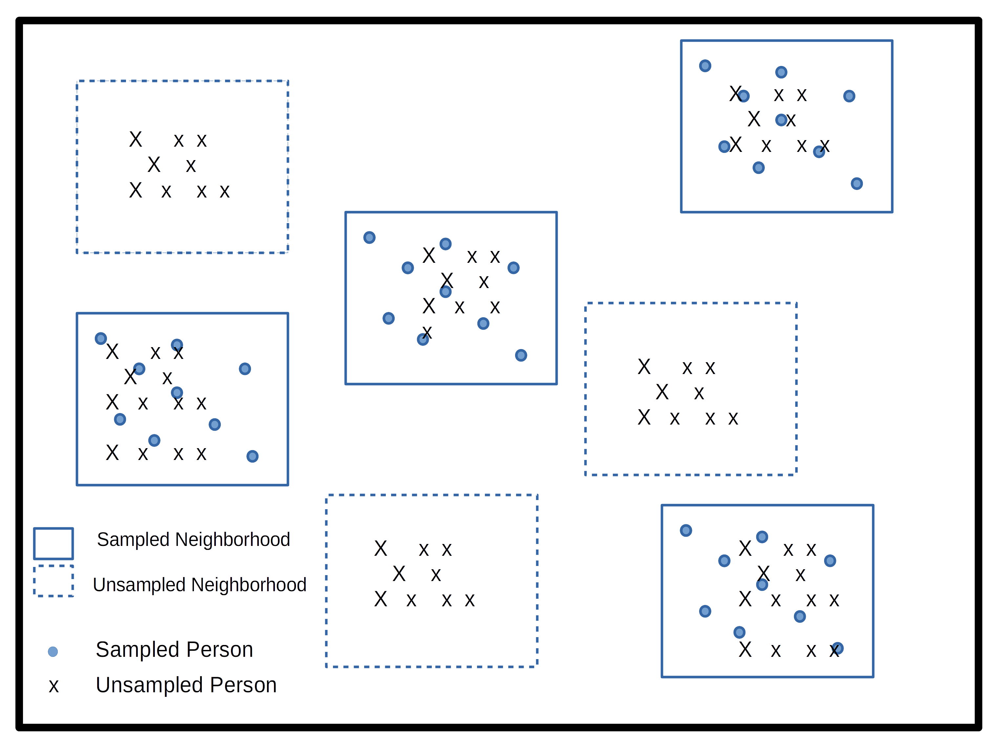
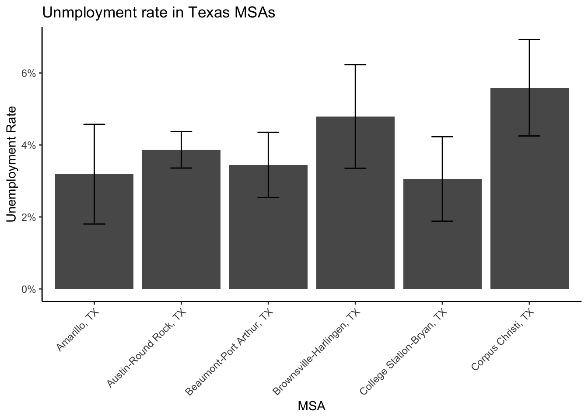
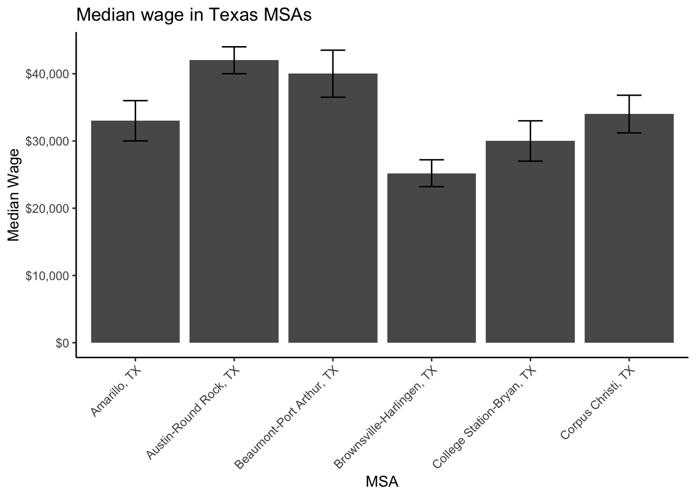
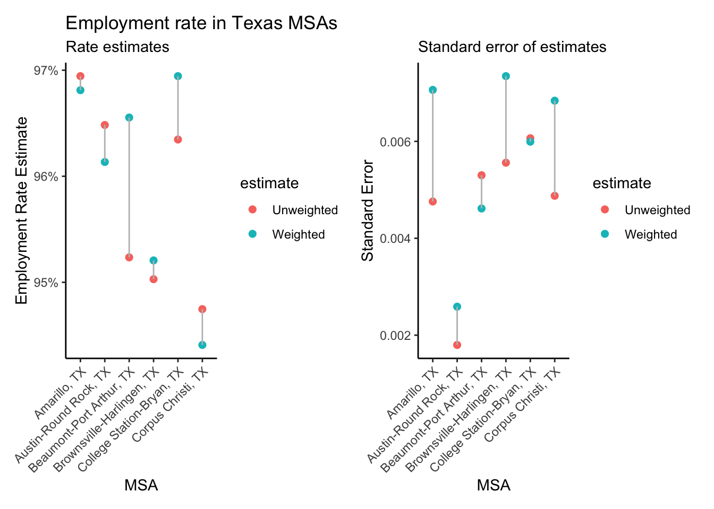

library(tidycensus)
library(tidyverse)
pums_vars_18<- pums_variables %>%
filter(year== 2018, survey == "acs1") %>%
distinct(var_code, var_label, data_type, level) %>%
filter(level == "person")
TX_pums <- get_pums(
variables = c("PUMA", "SEX", "AGEP", "CIT", "JWTR","JWRIP", "HISP"),
state = "AL",
survey = "acs1",
year = 2018)3 Analysis of Survey Data
4 Survey Data
4.1 Demographic Survey data
The majority of demographic research relies on two or three main sources of information. First among these are population enumerations or censuses, followed by vital registration data on births and deaths and last but not least, data from surveys. Censuses and other population enumerations are typically undertaken by federal statistical agencies and demographers use this data once it’s disseminated from these agencies. Similarly, vital registration data are usually collected by governmental agencies, who oversee the collection and data quality for the data. Survey data on the other hand can come from a wide variety of sources.
It’s not uncommon for us to go and collect our own survey data specific to a research project we have, typically on a specialized population that we are interested in learning about, but surveys can also be quite general in their scope and collect information on a wide variety of subjects. Owing to the mix of small and large-scale survey data collection efforts, survey data are often available on many different topics, locales and time periods. Of course we as demographers are typically interested in population-level analysis or generalization from our work, so the survey data we try to use are collected in rigorous manners, with much attention and forethought paid to ensure the data we collect can actually be representative of the target population we are trying to describe.
In this chapter, I will introduce the nature of survey sampling as is often used in demographic data sources, and describe what to look for when first using a survey data source for you research. These topics are geared towards researchers and students who have not worked with survey data much in the past and will go over some very pragmatic things to keep in mind. Following this discussion, I will use a specific example from the US Census Bureau’s American Community Survey and illustrate how to apply these principals to this specific source. The final goal of this chapter is to show how to use R to analyze survey data and produce useful summaries from our surveys, both tabular and graphically.
My goal in this chapter is to introduce you to common statistical sampling terms and principles, and show how to analyze complex survey design data using R. I hope that the general workflow I use in this chapter allows you to identify the key elements of your survey data source, use R to begin analyzing your data.
4.2 Basics of survey sampling
To begin this section, I want to go over some of the simple terms from sampling that are very important to those of us who rely on survey data for our work. For many of the concepts from this chapter, I strongly recommend Lohr (2019) for the theoretical portions and Lumley (2010) for discussion of how R is used for complex survey data.
The target population is the population that our survey has been designed to measure. For large national surveys, these are typically the population of the country of interest. For example, the Demographic and Health Survey (DHS) has it’s primary target population as women of childbearing ages in women of reproductive age and their young children living in households. Our observational units are the level at which we are collecting data, for surveys this is typically a person or a household, and our survey documentation will tell us what its unit of observation is. Sampling Units refer to the units that can serve for us to collect data from, for example we may not have a list of every school age child, but we may have a list of schools, so we may use schools as our sampling units and sample children within them. The sampling frame is the set of sampling units containing distinct sets of population members, this is usually the most recent population census, ideally the entire population, or following our school example from above, the entire listing of schools.
These terms are ubiquitous in sampling, but other terminology also exists in many surveys and these terms relate to the nature of how the survey was actually carried out. Many times the surveys we end up using are not themselves simple random samples, but are instead some blend of stratified or cluster sample. Simple random samples are the basis for much of statistical insight, and most methods in statistics assume your data are drawn from a population at random. Certainly, methods for collecting random samples exist, such as random digit dialing for phone samples, but often times these samples themselves are not truly random, they are stratified by a geographic area or by type of phone (mobile vs land line). For example, the DHS uses a stratified, cluster sample to collect its information. Strata refer to relatively homogeneous areas within the place we are trying to collect data. In the DHS, these are typically rural or urban areas of a country, as identified by the census. Within each strata, the DHS will choose clusters from which to sample from, this is a two-stage sampling method, where first the sampling frame is stratified, then clusters are selected. Clusters in the DHS are usually neighborhoods in urban areas and smaller towns or villages in rural areas.
Figure 1 shows a cartoon of how this process works, with multiple potential cluster that can be sampled (boxes), and within the cluster are our observational units, some of which are sampled, and some of which are unsampled.

4.3 Simple versus complex survey designs
How the data we’re using is sampled has a major implication for how we analyze it. The majority of statistical tools assume that data come from simple random samples, because most methods assume independence of observations, regardless of which distribution or test statistic you are using. Violations of this assumption are a big problem when we go to analyze our data, because the non-independence of survey data are automatically in violation of a key assumption of any test. The stratified and clustered nature of many survey samples may also present problems for methods such as linear regression analysis which assume errors in the model are homoskedastic, or constant. When data are collected in a stratified or clustered method, the data may have less variation than a simple random sample, because individuals who live closely to one another often share other characteristics in common as well. Our statistical models don’t do well with this type of reduction in variation and we often have to resort to manipulations of our model parameters or standard errors of our statistics in order to make them coincide with how the data were collected.
Not to fear! Data collected using public funds are typically required to be made available to the public with information on how to use them. Most surveys come with some kind of code book or user manual which describes how the data were collected and how you should go about using them. In these cases, it pays to read the manual because it will tell you the names of the stratification and clustering variables in the survey data. This will allow you to use the design of the survey in your analysis so that your statistical routines are corrected for the non-randomness and homogeneity in the survey data.
He’s not heavy, he’s my brother
Another important aspect of survey data are the use of weighting variables. Whenever we design a survey, we have our target population, or universe of respondents in mind. In the DHS, again, this is traditionally1 women of childbearing age and their children (International 2012). When we collect a sample from this population, or sample may be, and typically is, imperfect. It is imperfect for many reasons, owing to the difficulty of sampling some members of the population, or their unwillingness to participate in our study. Part of designing an effective survey is knowing your universe or population, and its characteristics. This will let you know the probability of a particular person being in the sample. Of course, the more complicated the survey, the more complicated it is to know what this probability is. For example, if we were to sample people in the United States, using a stratified design based on rural and urban residence, we would need to know how many people lived in rural and urban areas within the country, as this would effect the probability of sampling a person in each type of area. This inclusion probability tells us how likely a given person is of being sampled. The inverse of the inclusion probability is called the sampling weight:
\(w_i = \frac{1} {\pi_i}\)
where \(\pi_i\) is the inclusion probability.
Sampling weights are what we use to make our analyses of a survey representative of the larger population. They serve many purposes including unequal inclusion probabilities, differences in sample characteristics compared to the larger population, and differences in response rates across sample subgroups. All of these situations make the sample deviate from the population by affecting who the actual respondents included in the survey are. Differences in our sample when compared to the larger population can affect most all of our statistical analysis since again, most methods assume random sampling. The weights that are included in public data are the result of a rigorous process conducted by those who designed and implemented the survey itself, and most surveys in their user manuals or code books describe the process of how the weights are created. For example, the US Center for Disease Control and Prevention’s Behavioral Risk Factor Surveillance System (BRFSS) provides a very thorough description of how their final person weights are calculated (CDC 2020). These weights include three primary factors, the stratum weight, which is a combination of the number of records in a sample strata and the density of phone lines in a given strata, combined with the number of phones in a sampled household and the number of adults in the household to produce the final design weight. These weights are then raked to eight different marginal totals, based on age, race/ethnicity, education, marital status, home ownership, gender by race/ethnicity, age by race/ethnicity and phone ownership(CDC 2020). After this process, weights are interpretable as the number of people a given respondent in the survey represents in the population. So, if a respondent’s weight in the survey data is 100, they actually represent 100 people in the target population.
Other types of weights also exist, and are commonly seen in federal data sources. A common kind of weight that includes information on both the probability of inclusion AND the stratified design of the survey are replicate weights. Replicate weights are multiple weights for each respondent, and there are as many weights as there are different levels of the stratification variable. Later in this chapter, we will discuss how replicate weights are used, as compared to single design weights in an example.
4.4 Characteristics of YOUR survey
Survey data that come from reputable sources, such as most federal agencies or repositories such as the Inter-university Consortium for Political and Social Research (ICPSR) at the University of Michigan in the United States, are accompanied by descriptions of the data source including when and where it was collected, what it’s target population is, and information on the design of the survey. This will include information on sample design, such as stratum or cluster variables, and design or replicate weights to be used when you conduct your analysis. I cannot stress enough that learning how your particular survey data source is designed, and how the designers recommend you use provided survey variables for your analysis, is imperative to ensure your analysis is correctly specified.
4.5 Example from the American Community Survey
Let’s look at an example of these ideas in a real data source. Throughout the book I will use several complex survey design data sources to illustrate various topics, in this chapter I will use data from the US Census Bureau’s American Community Survey (ACS) public use microdata sample (PUMS). We can actually use the tidycensus package (Walker and Herman 2021) to download ACS PUMS directly from the Census Bureau.
This example shows how to extract the 2018 single-year PUMS for the state of Texas, and only keep variables related to person-records. The ACS has information on both people and households, but for now we’ll only look at the person records. Help on these functions can be found by typing ?pums_variables and ?get_pums in R
knitr::kable(
head(TX_pums),
format = 'html'
)These data are also easily available from the Integrated Public Use Microdata Series (IPUMS) project housed at the University of Minnesota (Ruggles et al. 2021). The IPUMS version of the data adds additional information to the data and homogenizes the data across multiple years to make using it easier. The following example will use the ipumsr package to read in an extract from IPUMS-USA.
After you create an IPUMS extract, right click on the DDI link and save that file to your computer. Then repeat this for the .DAT file. If you need help creating an IPUMS extract, their staff have created a tutorial for doing so (https://usa.ipums.org/usa/tutorials.shtml).
This will save the xml file that contains all the information on the data (what is contained in the data file) to your computer. When using IPUMS, it will have a name like usa_xxxxx.xml where the x’s represent the extract number.
You will also need to download the data file, by right clicking the Download.DAT link in the above image. This will save a .gz file to your computer, again with a name like: usa_xxxxx.dat.gz. Make sure this file and the xml file from above are in the same folder.

The fundamentals of using ipumsr is to specify the name of your .xml file from your extract, and as long as your .tar.gz file from your extract is in the same location, R will read the data. The files on my computer:

library(ipumsr)
ddi <- read_ipums_ddi(ddi_file = "data/usa_00097.xml")
ipums <- read_ipums_micro(ddi = ddi)Will read in the data, in this case, it is a subset of the 2008 to 2012 single year ACS. This extract is not all of the variables from the ACS, as that would be a very large file and for my purposes here, I don’t need that. My goal for the rest of the chapter is to illustrate how to use the IPUMS as an example of a complex survey design data set and the steps necessary to do so.
4.6 Basics of analyzing survey data
A fundamental part of analyzing complex survey data are knowing the variables within the data that contain the survey design information. The US Census Bureau has documented the design of the survey in a publication (US Census Bureau 2014) The IPUMS version of the ACS has two variables STRATA and CLUSTER that describe the two stage process by which the data are collected. Here are a the first few lines of these from the data:
options(scipen = 999)
library(knitr)
kable(head(ipums[, c("SERIAL", "STRATA", "CLUSTER")],
n=10),
digits = 14 )For the ACS, the strata variable is named, ironically STRATA and the cluster variable CLUSTER. The IPUMS creates the STRATA variable based on the sampling strata in the ACS, and the CLUSTER variable based on households within a stratum. Often in surveys, the clusters may not be households, they could be smaller population aggregates, such as neighborhoods and villages, as in the DHS.
The data also come with housing unit weights and person unit weights, so your analysis can be either representative of housing units or people.
kable(head(ipums[, c("SERIAL", "STRATA", "CLUSTER", "HHWT", "PERWT")],
n=10),
digits = 14 )| SERIAL | STRATA | CLUSTER | HHWT | PERWT |
|---|---|---|---|---|
| 1189369 | 330148 | 2019011893691 | 67 | 67 |
| 1189370 | 231948 | 2019011893701 | 43 | 43 |
| 1189371 | 690048 | 2019011893711 | 114 | 114 |
| 1189372 | 430248 | 2019011893721 | 34 | 34 |
| 1189373 | 650048 | 2019011893731 | 35 | 35 |
| 1189374 | 680548 | 2019011893741 | 19 | 19 |
| 1189375 | 340048 | 2019011893751 | 18 | 18 |
| 1189376 | 60048 | 2019011893761 | 37 | 37 |
| 1189377 | 440048 | 2019011893771 | 76 | 76 |
| 1189378 | 462348 | 2019011893781 | 10 | 10 |
As can be seen in the first few cases, the HHWT variable is the same for everyone in a given household, but each person has a unique person weight showing that they each represent different numbers of people in the population. Further investigation of the housing and person weights allow us to see what these values actually look like.
summary(ipums$PERWT) Min. 1st Qu. Median Mean 3rd Qu. Max.
1.0 49.0 78.0 106.3 128.0 2376.0 Here we see the minimum person weight is 1 and the maximum is 2376, which tells us that at least on person in the data represents 2376 people in the population that year. A histogram of the weights can also show us the distribution of weights in the sample.
library(ggplot2)
ipums%>%
ggplot(aes(x = PERWT)) +
geom_histogram() +
labs(title = "Histogram of ACS Person Weights, 2019")
We can see how the weights inflate each person or household to the population by summing the weights. Below, I sum the person weights for the state of Texas, the sum is 28,995,881 million people, which is the same as the official estimate of the population in 2019 (https://www.census.gov/quickfacts/TX), we also see, by using the n() function, that there were 272,776 persons in the sample in 2019 living in Texas.
library(dplyr)
ipums%>%
filter(STATEFIP == 48)%>%
summarize(tot_pop = sum( PERWT ) , n_respond = n())# A tibble: 1 × 2
tot_pop n_respond
<dbl> <int>
1 28995881 272776For housing units, we have to select a single person from the household in order for the same process to work, otherwise we would misrepresent the number of households in the state. We see there are 10,585,803 million housing units, and 114,016 unique households in the data.
ipums%>%
filter(STATEFIP == 48,
PERNUM == 1)%>%
summarize(tothh = sum( HHWT ) , n_housing = n())# A tibble: 1 × 2
tothh n_housing
<dbl> <int>
1 10585803 114016This total is nearly identical to that from the Census’s ACS estimate.
This exercise shows that by using the provided weights in the survey, we can estimate the population size the sample was supposed to capture effectively. The survey package and the newer tidyverse package srvyr are designed to fully implement survey design and weighting and perform a wide variety of statistical summaries.
The way these packages work, is that you provide the name of your data frame, and the survey design variables that are in your data and the package code performs the requested analysis, correcting for survey design and weighting to the appropriate population. The code below illustrates how to enter the survey design for the IPUMS-USA ACS. Some surveys will not have both a cluster and stratification variable, so again, it’s important to consult your survey documentation to find these for your data.
The function as_survey_design() in this case takes three arguments, since we are piping the 2019 ACS into it, we don’t have to specify the name of the data. ids is the argument for the cluster variable, if your survey doesn’t have one, just leave it out. strata is where you specify the name of the survey stratification variable, and weights is where you specify the name of the appropriate weighting variable. In this case, I’m replicating the estimate of the housing units in Texas from above, so I’ll use the HHWT variable. The easiest way to get a total population estimate is to use the survey_total() function, which is equivalent to summing the weights as shown above, although in the case of the survey analysis commands in the survey and srvyr packages, the total will also be estimated with a standard error of the estimate.
library(srvyr)
library(survey)
ipums%>%
filter(STATEFIP == 48, PERNUM == 1)%>%
as_survey_design(cluster= CLUSTER,
strata = STRATA,
weights = HHWT)%>%
summarize(tothh = survey_total())A short aside about survey design options The core definition of the ACS survey design is shown in the code above, and I highly recommend that you inspect the help file for the survey design functions ?as_survey_design or ?svydesign. An important option that often has to be specified is the nest=TRUE option. This if often necessary if PSU identifiers are not unique across strata. For example, the fictional data shown below has the PSU’s values the same across strata.}
fake_survey<- data.frame(
strata = c(1,1,1,1,1,1,
2,2,2,2,2,2),
psu = c(1,1,1,2,2,3,
1,1,2,2,3,3),
weight = rpois(n = 12, lambda = 20))
knitr::kable(fake_survey)| strata | psu | weight |
|---|---|---|
| 1 | 1 | 14 |
| 1 | 1 | 19 |
| 1 | 1 | 12 |
| 1 | 2 | 21 |
| 1 | 2 | 24 |
| 1 | 3 | 25 |
| 2 | 1 | 16 |
| 2 | 1 | 10 |
| 2 | 2 | 24 |
| 2 | 2 | 21 |
| 2 | 3 | 18 |
| 2 | 3 | 27 |
If we attempt to make a survey design from this, R would show an error.
fake_design<- fake_survey%>%
as_survey_design(ids = psu,
strata=strata,
weights = weight)Error in svydesign.default(ids, probs, strata, variables, fpc, .data, : Clusters not nested in strata at top level; you may want nest=TRUE.But if we include the nest = TRUE option, R doesn’t give us the error:
fake_design<- fake_survey%>%
as_survey_design(ids = psu,
strata=strata,
weights = weight,
nest = TRUE)
fake_designStratified 1 - level Cluster Sampling design (with replacement)
With (6) clusters.
Called via srvyr
Sampling variables:
- ids: psu
- strata: strata
- weights: weight
Data variables: strata (dbl), psu (dbl), weight (int)The ACS from IPUMS has unique CLUSTERs across strata, so we don’t have to specify that argument when we declare our survey design.
Back to our housing estimates.
In this case, our tothh estimate is identical to summing the weights, but new we also have an estimate of the precision of the estimate, so we could produce a more informed statistical estimate that in 2019, there were 10,585,803 \(\pm\) 27,274.96 occupied housing units in the state.
If your data come with replicate weights instead of strata and cluster variables, this can be specified using the as_survey_rep() command instead as_survey_design(). In this case, we have to specify all of the columns which correspond to the replicate weights in the data. There are likely many ways to do this, but below, I use a method that matches the column names using a regular expression, where we are looking for the string REPWT, followed by any number of numeric digits, that is what the [0-9]+ portion tells R to do. Also, the ACS uses a balanced replicate weight construction, which also requires the case weight as well (Ruggles et al. 2021), so we specify the replicate weight type as BRR. Again, this is specific to the ACS, and you need to consult your own code book for your survey for your design information.
In this case, we get the same estimate for the total number of housing units, but a smaller variance in the estimate, which is often seen when using replicate weights.
ipums%>%
filter(STATEFIP == 48, PERNUM == 1)%>%
as_survey_rep(weight = HHWT,
repweights =matches("REPWT[0-9]+"),
type = "JK1",
scale = 4/80,
rscales = rep(1, 80),
mse = TRUE)%>%
summarize(tothh = survey_total())# A tibble: 1 × 2
tothh tothh_se
<dbl> <dbl>
1 10585803 15479.rw<-ipums%>%
filter(STATEFIP==48, PERNUM==1)%>%
select(REPWT1:REPWT50)
t1<-survey::svrepdesign(data=ipums[ipums$STATEFIP==48&ipums$PERNUM==1,],
repweights = rw,
weights = ipums$HHWT[ipums$STATEFIP==48&ipums$PERNUM==1],
type="JK1",scale = .05, rscales = rep(1, ncol(rw)), mse= TRUE)
t1$variables$ones<-1
library(survey)
svytotal(~ones, design=t1) total SE
ones 10585803 11850We can also define the survey design outside of a dplyr pipe if we want using the survey package.
acs_design <- svydesign(ids = ~ CLUSTER,
strata= ~ STRATA,
weights = ~ PERWT,
data=ipums)
acs_designStratified 1 - level Cluster Sampling design (with replacement)
With (114016) clusters.
svydesign(ids = ~CLUSTER, strata = ~STRATA, weights = ~PERWT,
data = ipums)Of course we typically want to do more analysis than just estimate a population size, and typically we are interested in using survey data for comparisons and regression modeling. To carry out any sort of statistical testing on survey data, we must not only weight the data appropriately but we must also calculate all measures of variability correctly as well. Since surveys are stratified, the traditional formula for variances is not correct because under stratified sampling, all estimates are not only a function of the total sample, but also the within-strata sample averages and sample sizes. We can estimate the variances in our estimates using the design variables and sample weights in the survey analysis procedures, but there are options.
4.7 Replicates and jack knifes and expansions, oh my!
When conducting your analysis, you may not have any choices of whether you should use replicate weights or design weights, because your survey may only have one of these. There are two main strategies to estimate variances in survey data, the Taylor Series Approximation also referred to as linearization and the use of replicate weights. The Taylor Series, or linearization method is an approximation to the true variance, but is likely the most commonly used technique when analyzing survey data using regression methods. Lohr (2019) describes the calculation of variances from simple and clustered random samples in her book, and by her admission, once one has a clustered random sample the variance calculations for simple calculations becomes much more complex.
The problem is that we often want much more complicated calculations in our work and the variance formulas for anything other than simple ratios are not analytically known. The Taylor series approximation to the variance for complex and nonlinear terms such as ratios or estimates of regression parameters. The survey package in R will do this if you specify a survey design that includes strata or clusters, while if you specify replicate weights then it will use an appropriate technique depending on how the data were collected.
Typical replicate methods include balanced replicates, where there are exactly two clusters within each stratum, jackknife methods, which effectively remove one cluster from the strata and perform all calculations without that cluster in the analysis, then average across all replicates, and bootstrap methods which randomly sample clusters within strata with replacement a large number of times to get an estimate of the quantities of interest.
4.8 Descriptive analysis of survey data
The survey library allows many forms of descriptive and regression analysis.
4.9 Weighted frequencies and rates
Basic frequency tables are very useful tools for examining bivariate associations in survey data. In the survey analysis packages in R, the basic tools for doing this are the svytable() function in survey, or via the survey_total() function in srvyr. First I will recode two variables in the ACS, the employment status to indicate if a respondent is currently employed, and the MET2013 variable, which is the metropolitan area where the respondent was living. This will give us the ACS estimate for the employed and unemployed population in each Texas MSA. I first have to filter the data to be people of working age, who are in the labor force and living in a MSA.
ipums %>%
filter(EMPSTAT %in% 1:2,
AGE >= 16 & AGE <= 65,
MET2013 != 0) %>%
mutate(employed = as.factor(case_when(.$EMPSTAT == 1 ~ "Employed",
.$EMPSTAT == 2 ~ "Unemployed" )),
met_name = haven::as_factor(MET2013)) %>%
as_survey_design(cluster = CLUSTER,
strata = STRATA,
weights = PERWT) %>%
group_by(met_name, employed)%>%
summarize(emp_rate = survey_total()) %>%
head()# A tibble: 6 × 4
# Groups: met_name [3]
met_name employed emp_rate emp_rate_se
<fct> <fct> <dbl> <dbl>
1 Amarillo, TX Employed 114201 2824.
2 Amarillo, TX Unemployed 3761 843.
3 Austin-Round Rock, TX Employed 1193654 10735.
4 Austin-Round Rock, TX Unemployed 47998 3247.
5 Beaumont-Port Arthur, TX Employed 163936 3513.
6 Beaumont-Port Arthur, TX Unemployed 5851 774.This is OK, but if we want the totals in columns versus rows, we need to reshape the data. To go from the current “long” form of the variables to a wide form, we can use pivot_wider in dplyr.
wide<-ipums %>%
filter(EMPSTAT %in% 1:2,
AGE >= 16 & AGE <= 65,
MET2013 != 0) %>%
mutate(employed = as.factor(case_when(.$EMPSTAT == 1 ~ "Employed",
.$EMPSTAT == 2 ~ "Unemployed" )),
met_name = haven::as_factor(MET2013)) %>%
as_survey_design(cluster = CLUSTER,
strata = STRATA,
weights = PERWT) %>%
group_by(met_name, employed)%>%
summarize(emp_rate = survey_total()) %>%
pivot_wider(id_cols = met_name,
names_from = employed,
values_from = c(emp_rate, emp_rate_se) ) %>%
head()
wide# A tibble: 6 × 5
# Groups: met_name [6]
met_name emp_rate_Employed emp_rate_Unemployed emp_rate_se_Employed
<fct> <dbl> <dbl> <dbl>
1 Amarillo, TX 114201 3761 2824.
2 Austin-Round Rock,… 1193654 47998 10735.
3 Beaumont-Port Arth… 163936 5851 3513.
4 Brownsville-Harlin… 161922 8153 3500.
5 College Station-Br… 111576 3517 3132.
6 Corpus Christi, TX 208801 12365 4222.
# ℹ 1 more variable: emp_rate_se_Unemployed <dbl>A note about pivoting data The previous example used the pivot_wider() function to take observations that were in rows and pivot them into columns. This process, along with the pivot_longer() function are fundamental to working with many types of demographic data where we either need to format the data so observations are distributed over columns (as in the above example), or where we have multiple columns and we need to put those into multiple rows. The pivot_wider() function has lots of arguments that can be used, but the key ones are id_cols which identifies the unique identifier for each observation, here being the city or met_name. After that is identified, the names_from option tells R what the labels are in the current rows that will become separate column names. Here these are Employed and Unemployed. From these new columns, we can have multiple values provided to values_from, provided as a vector of current column names. Here these are emp_rate and the standard error emp_rate_se.
To return the data to their original form, with repeated observations in the rows, we can use the pivot_longer() function. In this case I will just provide the columns in the wide data that I want to be in rows in the long data:
wide%>%
pivot_longer(cols = starts_with("emp_rate_"),
names_to = c(".value", "rate"),
names_sep = "\\._")%>%
select(-rate)# A tibble: 6 × 5
# Groups: met_name [6]
met_name emp_rate_Employed emp_rate_Unemployed emp_rate_se_Employed
<fct> <dbl> <dbl> <dbl>
1 Amarillo, TX 114201 3761 2824.
2 Austin-Round Rock,… 1193654 47998 10735.
3 Beaumont-Port Arth… 163936 5851 3513.
4 Brownsville-Harlin… 161922 8153 3500.
5 College Station-Br… 111576 3517 3132.
6 Corpus Christi, TX 208801 12365 4222.
# ℹ 1 more variable: emp_rate_se_Unemployed <dbl>Which gets me back to a very similar data frame that I started with above. We will also see in the chapter on micro demography examples of using these functions when assemlbing longitudinal data sets.
Of course, if we want rates, this would imply us having to divide these columns to calculate the rate, but we can also get R to do this for us using survey_mean(). Since the employed variable is dichotomous, if we take the mean of its various levels, we get a proportion, in this case the employment and unemployment rates, respectively.
ipums %>%
filter(EMPSTAT %in% 1:2,
AGE >= 16 & AGE <= 65,
MET2013 != 0) %>%
mutate(employed = as.factor(case_when(.$EMPSTAT == 1 ~ "Employed",
.$EMPSTAT == 2 ~ "Unemployed" )),
met_name = haven::as_factor(MET2013)) %>%
as_survey_design(cluster = CLUSTER,
strata = STRATA,
weights = PERWT) %>%
group_by(met_name, employed)%>%
summarize(emp_rate = survey_mean()) %>%
pivot_wider(id_cols = met_name,
names_from = employed,
values_from = c(emp_rate, emp_rate_se) ) %>%
head()# A tibble: 6 × 5
# Groups: met_name [6]
met_name emp_rate_Employed emp_rate_Unemployed emp_rate_se_Employed
<fct> <dbl> <dbl> <dbl>
1 Amarillo, TX 0.968 0.0319 0.00706
2 Austin-Round Rock,… 0.961 0.0387 0.00259
3 Beaumont-Port Arth… 0.966 0.0345 0.00461
4 Brownsville-Harlin… 0.952 0.0479 0.00735
5 College Station-Br… 0.969 0.0306 0.00599
6 Corpus Christi, TX 0.944 0.0559 0.00684
# ℹ 1 more variable: emp_rate_se_Unemployed <dbl>Which gets us the employment rate and the unemployment rate for each metropolitan area, with their associated standard errors. This is a general process that would work well for any grouping variable. If we create an object from this calculation, in this case I’ll call it tx_rates, then we can also easily feed it into ggplot to visualize the rates with their associated 95% confidence intervals. The geom_errorbar addition to a ggplot object can add errors to estimates, which are great because we convey the uncertainty in the rates.
tx_rates%>%
ggplot()+
geom_bar(aes(x=met_name, y = emp_rate_Unemployed), stat = "identity")+
geom_errorbar(aes(x=met_name,
ymin=emp_rate_Unemployed-1.96*emp_rate_se_Unemployed,
ymax= emp_rate_Unemployed+1.96*emp_rate_se_Unemployed),
width=.25)+
scale_y_continuous(labels = scales::percent)+
labs(x = "MSA",
y = "Unemployment Rate",
title = "Unmployment rate in Texas MSAs")+
theme(axis.text.x = element_text(angle = 45, hjust = 1))
We see that among the first 6 MSAs in the state (that are in the ACS microdata), Corpus Christi has the highest unemployment rate a %, and College Station-Bryan has the lowest unemployment rate at %.
We can also use these functions for continuous variables, say with incomes. In the code below, I pipe all the elements of the analysis together to illustrate the workflow that we can do to calculate the median income in each MSA and plot it along with its error.
ipums %>%
filter(EMPSTAT %in% 1:2,
AGE >= 16 & AGE <= 65,
MET2013 != 0) %>%
mutate(income = ifelse(INCWAGE <= 0, NA, INCWAGE),
met_name = haven::as_factor(MET2013)) %>%
as_survey_design(cluster = CLUSTER,
strata = STRATA,
weights = PERWT) %>%
group_by(met_name)%>%
summarize(median_wage = survey_median(income, na.rm=T)) %>%
head() %>%
ggplot()+
geom_bar(aes(x=met_name, y = median_wage), stat = "identity")+
geom_errorbar(aes(x=met_name,
ymin=median_wage-1.96*median_wage_se,
ymax= median_wage+1.96*median_wage_se),
width=.25)+
scale_y_continuous(labels = scales::dollar)+
labs(x = "MSA",
y = "Median Wage",
title = "Median wage in Texas MSAs")+
theme(axis.text.x = element_text(angle = 45, hjust = 1))
Which shows that Austin-Round Rock has the highest median wage and Brownsville-Harlingen has the lowest median wage.
4.10 Creating tables from survey data analysis
Tabular output from our survey data analysis is possible through several different means. When using dplyr, our intermediate output of the analysis is always a data frame, and so any R method for printing data frames would work for simple tabular display. For instance, if we just use knitr::kable() on our workflow from above instead of piping into a plot we would get something like this:
ipums %>%
filter(EMPSTAT %in% 1:2,
AGE >= 16 & AGE <= 65,
MET2013 != 0) %>%
mutate(income = ifelse(INCWAGE <= 0, NA, INCWAGE),
met_name = haven::as_factor(MET2013)) %>%
as_survey_design(cluster = CLUSTER,
strata = STRATA,
weights = PERWT) %>%
group_by(met_name)%>%
summarize(median_wage = survey_median(income, na.rm=T)) %>%
head() %>%
knitr::kable(format = "latex",
digits = 0,
caption = "Median Wages in Texas MSAs",
align = 'c',
col.names =c("MSA Name", "Median Wage", "Median Wage SE"))Which is OK, but there are other ways to make tables for reports. The gt package (Iannone, Cheng, and Schloerke 2021) is built using tidyverse principles, and build tables in much the same way that ggplot builds plots, and fits easily into a dplyr workflow. Here, I use gt to produce a similar table to that from knitr::kable from above.
library(gt, quietly = T)
ipums %>%
filter(EMPSTAT %in% 1:2,
AGE >= 16 & AGE <= 65,
MET2013 != 0) %>%
mutate(income = ifelse(INCWAGE <= 0, NA, INCWAGE),
met_name = haven::as_factor(MET2013)) %>%
as_survey_design(cluster = CLUSTER,
strata = STRATA,
weights = PERWT) %>%
group_by(met_name)%>%
summarize(median_wage = survey_median(income, na.rm=T)) %>%
head()%>%
gt() %>%
tab_header(title = "Median Wages in Texas MSAs")%>%
cols_label(met_name = "MSA Name",
median_wage = "Median Wage",
median_wage_se = "Median Wage SE")%>%
fmt_number(columns = c( median_wage, median_wage_se),
decimals = 0, use_seps = TRUE)| Median Wages in Texas MSAs | ||
| MSA Name | Median Wage | Median Wage SE |
|---|---|---|
| Amarillo, TX | 33,000 | 1,529 |
| Austin-Round Rock, TX | 42,000 | 1,020 |
| Beaumont-Port Arthur, TX | 40,000 | 1,784 |
| Brownsville-Harlingen, TX | 25,200 | 1,020 |
| College Station-Bryan, TX | 30,000 | 1,529 |
| Corpus Christi, TX | 34,000 | 1,428 |
In general, the gt tables are much easier to make look nice, compared to basic tables, because they’re much more customizable. The gtsummary package extends the table functionality by combining the summary functions like dplyr with the table structures of gt. Additionally, it will recognize survey design objects so that information can also be integrated into your workflow. The gtsummary presents a more descriptive statistical summary of the variables included, and actually uses dplyr tools under the hood of the package.
In the code below, I first filter and mutate the IPUMS data to contain working age people who are employed, and who live in the six Texas cities featured in the examples above. I also create a new income variable that excludes all zero incomes, and drop levels of the MET2013 variable that aren’t in the list I specified. This pipes into the survey design function from the survey package, which pipes into the tbl_svysummary function which summarizes income for each MSA. This function has a lot of options to specify its output, and I recommend you consult the examples at the author’s website2.
library(gtsummary)
ipums %>%
filter(EMPSTAT == 1,
AGE >= 16 & AGE <= 65,
MET2013 != 0,
MET2013 %in% c(11100, 12420, 13140, 15180, 17780, 18580)) %>%
mutate(income = ifelse(INCWAGE <= 0, NA, INCWAGE),
met_name = haven::as_factor(MET2013))%>%
select(met_name, income, CLUSTER, STRATA, PERWT)%>%
droplevels()%>%
survey::svydesign(id = ~ CLUSTER,
strata = ~ STRATA,
weights = ~ PERWT,
data = .) %>%
tbl_svysummary(by = "met_name",
missing = "no",
include = c(met_name, income),
label = list(income = "Median Wage"))%>%
as_hux_table()Characteristic |
Amarillo, TX, N = 114,201 |
Austin-Round Rock, TX, N = 1,193,654 |
Beaumont-Port Arthur, TX, N = 163,936 |
Brownsville-Harlingen, TX, N = 161,922 |
College Station-Bryan, TX, N = 111,576 |
Corpus Christi, TX, N = 208,801 |
| Median Wage | 34,000 (19,200, 56,000) | 43,000 (24,000, 75,000) | 40,000 (20,000, 67,000) | 26,000 (14,000, 47,000) | 30,000 (14,000, 51,111) | 35,000 (20,000, 58,000) |
| Median (IQR) | ||||||
4.10.1 How this differs from simple random sampling
So the big question I often get from students is “Do I really need to weight my analysis?” and of course, I say, “Of course!”. Weights don’t just inflate your data to the population, they serve a very important role in making sure your sample data aren’t biased in their scope. Bias can enter into survey data in many forms, but nonresponse bias can dramatically affect population based estimates if key segments of our target population respond at low rates. Surveys will often deal with this by rigorous data collection strategies, but often the survey designers have to account for the added probability of nonresponse by modification of their basic weights. Lohr (2019) describes how this is done using a variety of methods including raking and post stratification, which typically separate the sample into subdivisions based on one or more demographic characteristic and produce weights based on how the sample deviates from the population composition. These methods are robust and are commonly used in large national surveys including the Behavioral Risk Factor Surveillance system (BRFSS).
Other reasons for weighting and why it matters are oversampling. Many surveys will do this in their data collection because an important element of their target population may be small in overall size, so they will sample more respondents from that population subgroup than their proportion in the larger population would predict. For example, if a survey wanted to get detailed data on recent refugees to a country, and this group is small, say .1 percent of the overall population, they may design their study to have 10% of their survey respondents be refugees. This oversampling can be accounted for in the survey weights so the additional respondents are down-weighted to represent their fraction of the target population, while still allowing the researchers to get a large sample from this group. Surveys such as the Early Childhood Longitudinal Surveys and the National Longitudinal Study of Adolescent to Adult Health (AddHealth) routinely over-sample specific groups. For example the AddHealth over-samples black adolescents with college educated parents, Cuban, Puerto Rican, Chinese, and physically disabled adolescents.
4.10.2 How do weights affect our estimates?
In the code example below, I illustrate how not including sample weights affects the estimates generated. This in effect is how traditional statistical analysis assuming random sampling would do things. So in order to compare the weighted estimates to the unweighted estimates, all we need to do is use a non-survey design oriented method to produce our estimate, and compare it to the survey design oriented method. Note that many surveys are designed to be self-weighting, so weights are not provided nor necessary, again, read the documentation for your specific survey for what it recommends.
srs<-ipums %>%
filter(EMPSTAT %in% 1:2,
AGE >= 16 & AGE <= 65,
MET2013 != 0) %>%
mutate(employed = as.factor(case_when(.$EMPSTAT == 1 ~ "Employed",
.$EMPSTAT == 2 ~ "Unemployed" )),
met_name = haven::as_factor(MET2013)) %>%
group_by(met_name)%>%
summarize(emp_rate = mean(I(employed)=="Employed"),
emp_rate_se = sd(I(employed)=="Employed")/sqrt(n()))%>%
# pivot_wider(id = met_name,
# names_from = employed,
# values_from = c(emp_rate, emp_rate_se) ) %>%
head()
srs$estimate<-"Unweighted"surv.est<-ipums %>%
filter(EMPSTAT %in% 1:2,
AGE >= 16 & AGE <= 65,
MET2013 != 0) %>%
mutate(employed = as.factor(case_when(.$EMPSTAT == 1 ~ "Employed",
.$EMPSTAT == 2 ~ "Unemployed" )),
met_name = haven::as_factor(MET2013)) %>%
as_survey_design(cluster = CLUSTER,
strata = STRATA,
weights = PERWT) %>%
group_by(met_name)%>%
summarize(emp_rate = survey_mean(I(employed)=="Employed")) %>%
#rename(emp_rate_surv = emp_rate, emp_rate_se_surv = emp_rate_se)%>%
head()
surv.est$estimate<-"Weighted"merged <- rbind(srs, surv.est)
p1<-merged%>%
ggplot(aes(y = emp_rate, x = met_name , color = estimate))+
geom_point(stat="identity",
cex=2)+
geom_line(aes(group = met_name),
col = "grey")+
scale_y_continuous(labels = scales::percent)+
scale_color_discrete( name = "Estimate Type")%>%
labs(x = "MSA",
y = "Employment Rate Estimate",
title = "Employment rate in Texas MSAs",
subtitle = "Rate estimates")+
theme(axis.text.x = element_text(angle = 45, hjust = 1))
p2<-merged%>%
ggplot(aes(y = emp_rate_se, x = met_name , color = estimate))+
geom_point(stat="identity",
cex=2)+
geom_line(aes(group = met_name),
col = "grey")+
scale_color_discrete()%>%
labs(x = "MSA",
y = "Standard Error",
title = "",
subtitle = "Standard error of estimates")+
theme(axis.text.x = element_text(angle = 45, hjust = 1))
library(patchwork)
(p1 + p2)
We see that the difference in the weighted and unweighted estimates do vary by MSA, as do the standard errors of the estimates, with the survey-design calculated standard errors nearly always being higher than those assuming simple random sampling. If our data came from a survey with more extreme oversampling we would likely see larger differences in these estimates, and it is generally advisable to include both weights and survey design elements in all analysis of complex survey data.
4.11 Basic statistical testing on survey data.
To perform basic bivariate statistical tests for frequency tables, the srvyr::svychisq and survey::svy_chisq are the primary tools you need. These will test for basic independence among rows and columns of a frequency table. Below is an example on how you would test for independence of labor force participation and gender in the IPUMS ACS data.
ipums %>%
filter(EMPSTAT != 0,
AGE >= 16 & AGE <= 65) %>%
mutate(lab_force_part = ifelse (test = EMPSTAT %in% c(1,2),
yes = 1,
no = 0),
gender = ifelse(test = SEX ==1,
yes = "Male",
no = "Female")) %>%
as_survey_design(cluster = CLUSTER,
strata = STRATA,
weights = PERWT) %>%
svychisq(~lab_force_part+gender,
design = .)
Pearson's X^2: Rao & Scott adjustment
data: NextMethod()
F = 1955.4, ndf = 1, ddf = 172976, p-value < 0.00000000000000022The output above is for the survey adjusted chi square test (Rao and Scott 1984), which is actually calculated as an F-test in this case. We see a large F-test value, and a very small p value, which indicates that men and women have different labor force participation rates. Using our workflow from above, we can calculate the actual rates as well.
ipums %>%
filter(EMPSTAT != 0,
AGE >= 16 & AGE <= 65) %>%
mutate(lab_force_part = ifelse (test = EMPSTAT %in% c(1,2),
yes = 1,
no = 0),
gender = ifelse(test = SEX ==1,
yes = "Male",
no = "Female")) %>%
as_survey_design(cluster = CLUSTER,
strata = STRATA,
weights = PERWT) %>%
group_by(gender)%>%
summarize(lf_part_rate = survey_mean(lab_force_part, na.rm=T)) %>%
head()%>%
gt() %>%
tab_header(title = "Labor Force Participation Rates in Texas")%>%
cols_label(gender = "Gender",
lf_part_rate = "Labor Force Participation Rate",
lf_part_rate_se = "SE")%>%
fmt_number(columns = c( lf_part_rate, lf_part_rate_se),
decimals = 3, use_seps = TRUE)| Labor Force Participation Rates in Texas | ||
| Gender | Labor Force Participation Rate | SE |
|---|---|---|
| Female | 0.674 | 0.002 |
| Male | 0.797 | 0.002 |
So we see that males have a much higher labor force participation rate, compared to females, and this puts the differences that we observed from the chi square test into better context.
4.11.1 Regression and survey design
The design of our surveys affect the most basic estimates we do, and likewise, the design affects the more complicated analysis as well. Regression models are the work horse of social science research and we will spend a significant amount of the chapters that follow on thorough inspection of them. In the context of this chapter, I felt like I need to show both how to include survey design in a regression model and illustrate that weighting and survey design matters in terms of the output from out models. This section is NOT a total coverage of these models, and is at best a short example. This example will go in a different direction and use data from the Demographic and Health Survey instead of the ACS.
The Demographic and Health Survey (DHS) data have been collected since the mid 1980’s in over 90 countries around the world, and the DHS provides a public model data set that represents data on real households, without a specific national context. These data are provided to let people learn how to use the data before applying for access. The model data can be downloaded freely from the DHS[^surveydata-3] as a SAS or STATA format, or from my Github site[^surveydata-4] for this book. Below, I will read in the data from Github and recode child growth stunting relative to the WHO standard as an outcome[^surveydata-5] , and child age, rural residence and gender as predictors.
The DHS household file is arrayed with a column for every child, so we must reshape the data from wide to long format using pivot_longer for the variables for child height relative to the WHO standard (hc70), child gender hc27, and child age hc1. The other variables are common to the household, so we do not have to reshape them (per the cols= line below). We then recode the outcome and the predictors for our regression example.
dhs_model_hh <- readRDS(
url("https://github.com/coreysparks/data/blob/master/dhs_model_hh.rds?raw=true")
)
dhs_model_hh_sub <- dhs_model_hh%>%
select(hc27_01:hc27_20,
hc70_01:hc70_20,
hc1_01:hc1_20,
hv021, hv025, hv270, hv005, hv021, hv022)%>%
pivot_longer(cols = c(-hv021, -hv025, -hv270, -hv005, -hv021, -hv022),
names_to = c(".value", "child"),
names_sep = "_") %>%
na.omit()%>%
mutate(stunting = car::Recode(hc70, recodes = "-900:-200 = 1; 9996:9999 = NA; else = 0"),
gender = ifelse(test = hc27 == 1, yes = "male", no = "female"),
hh_wealth = as.factor(hv270),
age = hc1,
age2 = hc1^2,
rural = ifelse(test = hv025 ==2, yes = "rural", no = "urban"),
wt = hv005/1000000,
psu = hv021,
strata = hv022)dhs_model_des<- dhs_model_hh_sub%>%
as_survey_design(cluster = psu,
strata = strata,
weights = wt,
nest = TRUE)
summary(dhs_model_des)Stratified Independent Sampling design (with replacement)
Called via srvyr
Probabilities:
Min. 1st Qu. Median Mean 3rd Qu. Max.
0.1552 0.7872 1.2943 1.5297 2.0336 6.6422
Stratum Sizes:
1 2 3 4 5 6 7 8 9 10 11 12 13 14 15 16 17 18 19
obs 33 136 52 41 159 23 108 117 185 266 218 44 244 25 125 183 152 80 144
design.PSU 33 136 52 41 159 23 108 117 185 266 218 44 244 25 125 183 152 80 144
actual.PSU 33 136 52 41 159 23 108 117 185 266 218 44 244 25 125 183 152 80 144
20 21 22 23 24 25 26 27
obs 62 83 74 74 73 6 122 124
design.PSU 62 83 74 74 73 6 122 124
actual.PSU 62 83 74 74 73 6 122 124
Data variables:
[1] "hv021" "hv025" "hv270" "hv005" "hv022" "child"
[7] "hc27" "hc70" "hc1" "stunting" "gender" "hh_wealth"
[13] "age" "age2" "rural" "wt" "psu" "strata" Just for completeness, I create a bar chart showing the percent stunted by the two main variables, gender and rural residence.
dhs_model_des%>%
group_by(gender, rural)%>%
summarise(stunting = survey_mean( stunting,design =.,
na.rm=T) )%>%
ggplot()+
geom_bar(aes(x = gender, y = stunting, fill = rural),
stat="identity",
position="dodge")+
labs(x = "Child Gender",
y = "Percent Stunted",
title = "Percent Stunted by Gender and Rural Residence",
subtitle = "DHS Model Data")+
scale_y_continuous(labels = scales::percent)Now I estimate two logistic regression models for the stunting outcome. The first assumes random sampling and the second includes the full survey design information.
For the unweighted regular logistic regression, we use the glm() function with family = binomial (link = "logit"). Theglm() function will be used extensivley in the chapters that follow.
library(broom)
m1<-glm(stunting ~ age + age2 + rural + gender,
data = dhs_model_hh_sub,
family = binomial(link = "logit"))
m1%>%
tidy()# A tibble: 5 × 5
term estimate std.error statistic p.value
<chr> <dbl> <dbl> <dbl> <dbl>
1 (Intercept) -1.67 0.158 -10.6 4.47e-26
2 age 0.0976 0.0111 8.82 1.10e-18
3 age2 -0.00145 0.000176 -8.23 1.91e-16
4 ruralurban -0.484 0.0934 -5.19 2.15e- 7
5 gendermale 0.0461 0.0837 0.551 5.82e- 1For the survey design model, you specify the design versus the data set name, otherwise the same code works just fine.
m2 <- dhs_model_des%>%
svyglm(stunting ~ age + age2 +rural + gender,
design = .,
family = binomial)Warning in eval(family$initialize): non-integer #successes in a binomial glm!m2%>%
tidy()# A tibble: 5 × 5
term estimate std.error statistic p.value
<chr> <dbl> <dbl> <dbl> <dbl>
1 (Intercept) -1.77 0.180 -9.83 2.03e-22
2 age 0.108 0.0128 8.39 8.18e-17
3 age2 -0.00164 0.000209 -7.84 6.77e-15
4 ruralurban -0.432 0.128 -3.38 7.25e- 4
5 gendermale 0.00938 0.103 0.0906 9.28e- 1There are lots of ways to make a table from a regression model, but stargazer (Hlavac 2018) is a simple way to present multiple models side by side.
stargazer::stargazer(m1, m2,
keep.stat = "n",
model.names = F,
column.labels = c("Unweighted model", "Weighted Model"),
type = "latex",
header = FALSE,
style = "demography",
title = "Output from Unweighted and Weighted Regression Models")In this case, we see that the coefficient estimates are very similar between the two models, but the coefficient standard errors are all smaller in the unweighted model. This is commonly what you see in this situation, because the survey deign model is actually using clustered standard errors instead of asymptotic standard errors Ibragimov and Müller (2016). While this example does not show an extreme difference, it is commonplace for t-statistics generated from clustered standard errors to have higher p-values than those using asymptotic standard errors. As a result, if the t-statistic is lower, and the p-value higher, you can easily get differences in your hypothesis tests for regression parameters. This is always something to be aware of as you analyze survey data.
[^surveydata-3] https://dhsprogram.com/data/model-datasets.cfm [^surveydata-4] https://github.com/coreysparks/dem-stats-book [^surveydata-4] Per the guide to DHS statistics
4.12 Chapter summary
The goal of this chapter was to review the complexities of demographic survey data sources. The analysis of these kinds of data have to proceed in a way that adheres to the design of the survey as well as the goal of population-level inference from the survey data. The use of person or housing unit weights are necessary to ensure that our statistical summaries and analysis are representative of the population that the survey was designed to measure. The incorporation of the sample design elements of primary sampling units and sampling strata are integral to the correct calculation of standard errors for any survey-based estimates we create. R, like most major statistical programs have several ways of dealing with these issues, and the libraries survey and srvyr are very flexible in the types of analysis they can perform, and can incorporate any survey design into the subsequent analysis that we carry out.
4.13 References
Cameron, A. Colin, and Douglas L. Miller. 2015. “A Practitioner’s Guide to Cluster-Robust Inference.” Journal of Human Resources 50 (2): 317–72. https://doi.org/10.3368/jhr.50.2.317.
CDC. 2020. “Weighting the BRFSS Data.” https://www.cdc.gov/brfss/annual_data/2019/pdf/weighting-2019-508.pdf.
Hlavac, Marek. 2018. Stargazer: Well-Formatted Regression and Summary Statistics Tables. Bratislava, Slovakia: Central European Labour Studies Institute (CELSI). https://CRAN.R-project.org/package=stargazer.
Iannone, Richard, Joe Cheng, and Barret Schloerke. 2021. Gt: Easily Create Presentation-Ready Display Tables. https://CRAN.R-project.org/package=gt.
Ibragimov, Rustam, and Ulrich K. Müller. 2016. “Inference with Few Heterogeneous Clusters.” The Review of Economics and Statistics 98 (1): 83–96. https://doi.org/10.1162/REST_a_00545.
International, ICF. 2012. “Demographic and Health Survey Sampling and Household Listing Manual.” ICF International.
Lohr, Shron. 2019. Sampling: Design and Analysis. 2nd ed. Boca Raton: Routledg/CRC Press.
Lumley, Thomas. 2010. Complex Surveys: A Guide to Analysis Using R: A Guide to Analysis Using R. John Wiley; Sons.
Rao, JNK, and AJ Scott. 1984. “On Chi-Squared Tests For Multiway Contigency Tables with Proportions Estimated From Survey Data.” Annals of Statistics 12: 46–60.
Ruggles, S, S Flood, Josiah Grover, S Foster, R Goeken, Jose Pacas, Erin Schouweiler, and M Sobek. 2021. “Integrated Public Use Microdata Series: Version 11.0 [Machine-Readable Database].” https://doi.org/https://doi.org/10.18128/D010.V8.0.
US Census Bureau. 2014. “American Community Survey Design and Methodology (January 2014).” https://www2.census.gov/programs-surveys/acs/methodology/design_and_methodology/acs_design_methodology_report_2014.pdf.
Walker, Kyle, and Matt Herman. 2021. Tidycensus: Load US Census Boundary and Attribute Data as ’Tidyverse’ and ’Sf’-Ready Data Frames. https://CRAN.R-project.org/package=tidycensus.